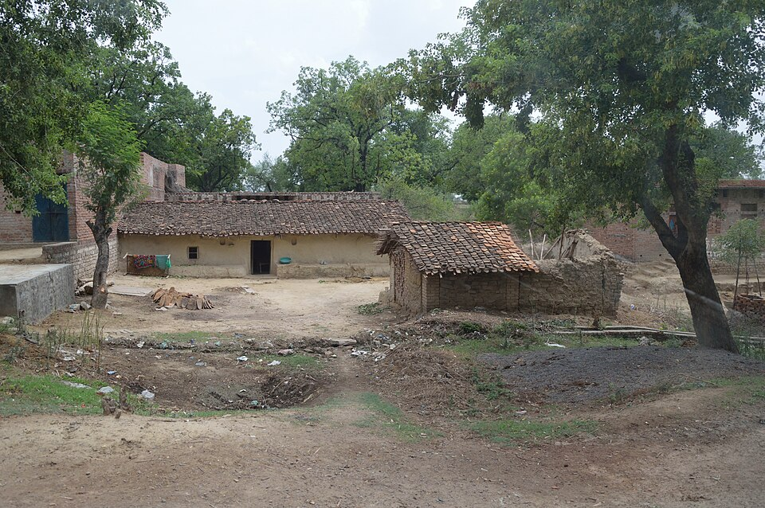

चित्रकूट का राजनीतिक और धार्मिक इतिहास: जानिए इस तीर्थ क्षेत्र की पूरी कहानी
धार्मिक आस्था, प्राकृतिक सुंदरता और हस्तशिल्प के लिए प्रसिद्ध चित्रकूट लोकसभा चुनाव और राजनीतिक समीकरणों के लिहाज से भी अहम है।

उत्तर प्रदेश के बुंदेलखंड क्षेत्र में स्थित चित्रकूट अपनी धार्मिक आस्था, प्राकृतिक सुंदरता और ऐतिहासिक विरासत के लिए खास पहचान रखता है। मान्यता है कि भगवान राम ने अपने वनवास का बड़ा हिस्सा यहीं बिताया था, जिसके कारण इसे राम की तपोभूमि कहा जाता है।
राजनीतिक रूप से यह जिला बांदा-चित्रकूट लोकसभा क्षेत्र के अंतर्गत आता है। भौगोलिक दृष्टि से चित्रकूट उत्तर प्रदेश और मध्य प्रदेश में फैली विंध्य पर्वत श्रृंखला के उत्तरी हिस्से में स्थित है, जिसकी सांस्कृतिक विरासत दोनों राज्यों से जुड़ी हुई है।
यहाँ स्थित कामदगिरि पर्वत और मंदाकिनी नदी के घाट प्रमुख धार्मिक केंद्र हैं, जहाँ हर अमावस्या और बड़े पर्वों पर देश भर से बड़ी संख्या में श्रद्धालु पहुंचते हैं।
और पढ़ें
गोंडा में चरित्र शक के चलते पत्नी की कुल्हाड़ी से हत्या, आरोपी पति गिरफ्तार
उत्तर प्रदेश के गोंडा में चरित्र पर शक के चलते एक व्यक्ति ने अपनी पत्नी की कुल्हाड़ी से वार कर हत्या कर दी। बेटे की सूचना पर पुलिस ने आरोपी को गिरफ्तार कर लिया है।
राष्ट्रीयतमिलनाडु और केरल में भारी बारिश का अनुमान, उत्तर भारत में कोहरे की चेतावनी
मौसम विभाग ने तमिलनाडु और केरल में भारी बारिश का अनुमान जताया है। इसके साथ ही उत्तर भारत के कई राज्यों में घने कोहरे और पूर्वोत्तर में बारिश की चेतावनी जारी की गई है।
राष्ट्रीयपूर्व क्रिकेटर सुरेश रैना का दिल्ली स्थित आलीशान घर, देखें तस्वीरें
पूर्व भारतीय क्रिकेटर सुरेश रैना ने अपने दिल्ली स्थित वसंत कुंज बंगले का टूर कराया है। घर के एक हिस्से में उनके क्रिकेट करियर और 2011 विश्व कप जीत की यादें सजी हुई हैं।
राष्ट्रीयउत्तर प्रदेश टीजीटी भर्ती के आवेदन की अंतिम तारीख बढ़कर 28 नवंबर हुई
उत्तर प्रदेश शिक्षा सेवा चयन आयोग ने 17,735 टीजीटी पदों के लिए आवेदन की अंतिम तारीख 28 नवंबर 2026 तक बढ़ा दी है। हाईकोर्ट के आदेश के बाद यह फैसला लिया गया है।